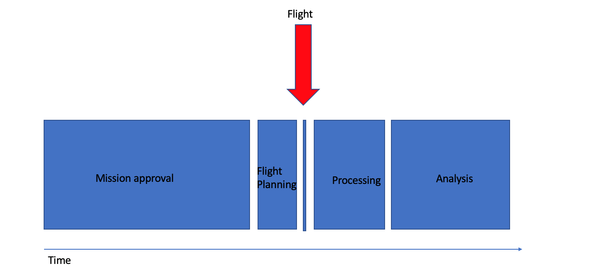
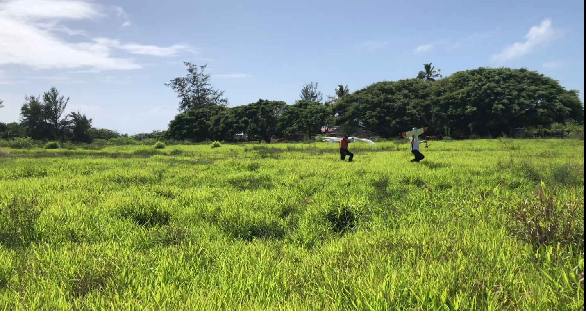
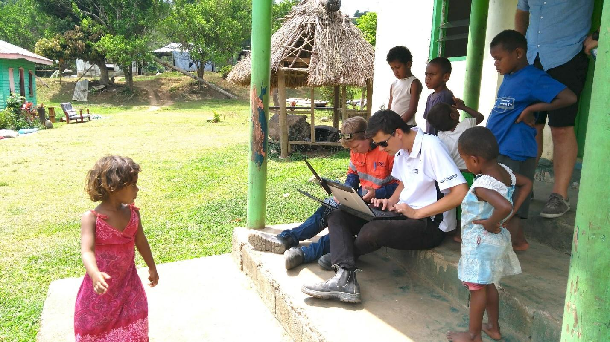
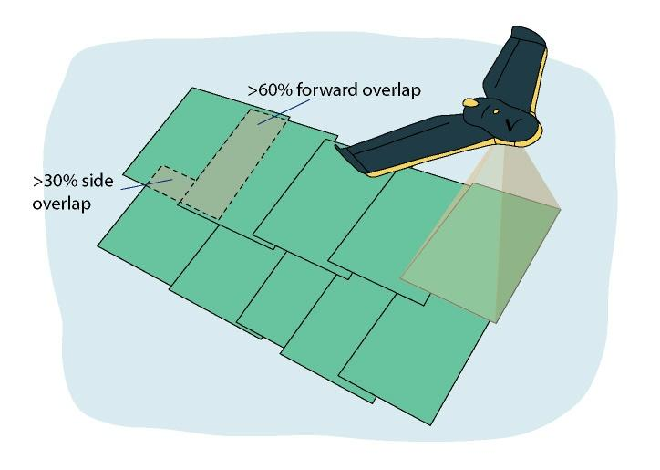
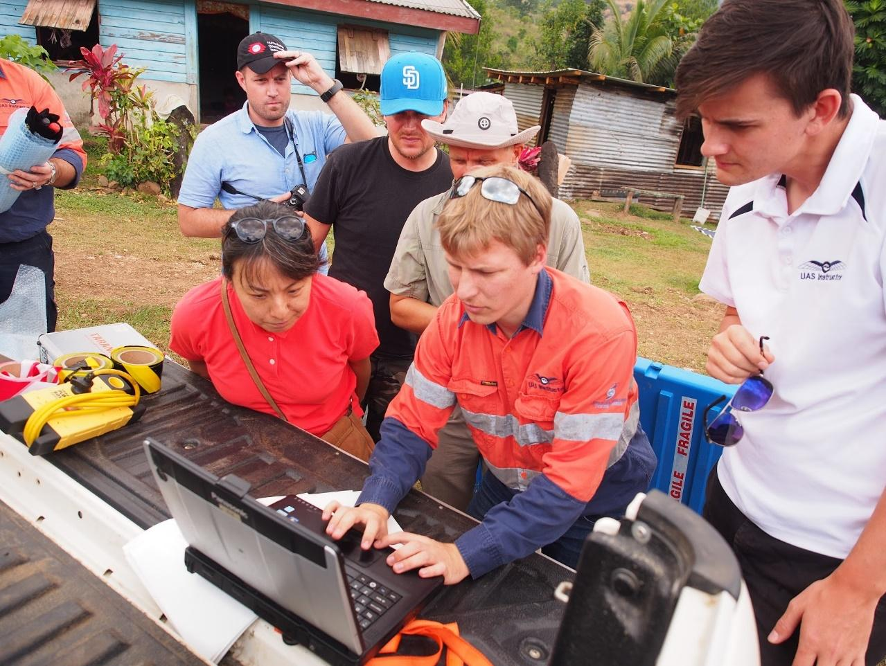
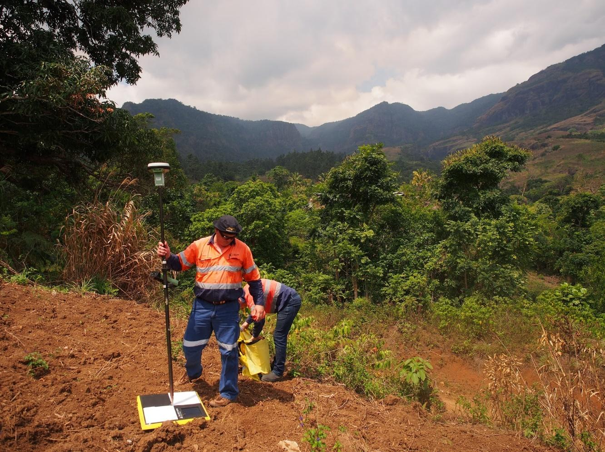

7. Preparing for the UAV Mission
Download page as PDFTime management
The actual flying of UAVs is the least time-consuming part of the process. Figure 5 shows the relative proportion of time needed for each step of the entire UAV mapping process, starting from preparation and including flying and post-processing. If the UAV mission will fly under circumstances that require special approvals, it can take anywhere from a few weeks to a few months to obtain these approvals; in addition, the approvals may be expensive, especially in cases where approval to fly higher than 400 ft is being sought. The decision tree shown inFigure 1—taken from the Airshare (n.d.) website—identifies the types of approvals required under different scenarios.
The preparation of flights and post-processing of data consume far more time than the actual flying and data collection. Before any disaster occurs, it is important to have a streamlined approval process and work flow in place for emergency mapping. Having a good relationship with the local CAA is also important to enable smooth operations and communications to avoid risks.
When on site, the following three tasks will be most time-consuming.
- Finding an area of operation for takeoff and landing. The operator should identify potential sites remotely (e.g., through existing satellite imagery) and dedicate a day or more to visually assessing whether the operation sites are acceptable (Figure 6).
- Reorganizing priorities due to weather or other unforeseen issues. Although weather-related changes may be difficult to foresee, budgeting extra days for them can be helpful.
- Processing and delivering the data. This task is particularly important and should be given ample consideration. Based on experience during the Tropical Cyclone Gita response in Tonga, the recommended approach is to complete the delivery of data on site with at least one person working solely on post-processing. This approach is critical under tight deadlines, such as in post-disaster situations.

_Figure 5. Time needed for the steps of a UAV deployment as a share of the whole process.
As indicated by the red arrow, the actual flying of the platform occupies only a small proportion of time. _
Takeoff and landing sites
The selection of takeoff and landing sites is particularly important if a fixed-wing UAV is being operated. The type and size of platform will determine the area/space needed for landing procedures. An open space with an even surface (such as a sports field) is often ideal. Site selection should begin with a desktop assessment using maps and images, and then include an in-person visit to ensure that the location is suitable for takeoff and landing.

Figure 6. A large, open field selected to launch and land the fixed-wing UAV in Tongatapu, Tonga.
Credit: UAV4Resilience 2017
Defining the area of interest and coordination
The area of interest (AOI) where images will be collected is determined by the mapping needs and environmental conditions. It is useful to plan the mission using preexisting imagery in a geographic information system (GIS) as a backdrop; this step allows checking for obstacles on the ground that could impede takeoff or landing and also offers a view of the topography, land cover, and road accessibility of the operational base (takeoff and landing site).
Airspace designation charts published by CAAs show the classification of airspace and should always be consulted when determining if a UAV mission in the AOI is feasible. Once these factors are reviewed and AOI defined, the AOI polygon along with basic metadata on desired image specifications (e.g., target ground sample distance) can be exported from a GIS and used as input in the flight-planning and coordination software.

Figure 7. Mission planning for the LiDAR survey in Fiji during the October 2017 field testing.
Credit: _ UAV4Resilience 2017_
With increasingly widespread use of UAVs, the sky can quickly become crowded with flying imaging platforms, both manned and unmanned. This scenario is particularly likely when multiple UAV teams come together after a natural disaster event to map the impacted areas for rapid damage assessment and support to response operations. Coordination with the local CAA is paramount to ensure safety.
To optimize mapping activities, online tools are being developed to allow easy sharing and coordination of “who’s flying where.” The Imagery Coordination Service,1 for example, offers an open source platform for requesting imagery collections and facilitates coordination between UAV pilots and other traditional imagery providers (e.g., satellite-imaging companies).
Flight planning
When flying, UAV sensors collect images by frames. After the flight, the frames need to be stitched together to create a mosaic image that shows the entire area seamlessly. The image collection for UAVs assumes a pattern of parallel flight lines and a fairly stable aircraft. Aircraft that are less stable — a category that includes many UAVs — necessitate some changes in the collection strategy. For example, AT processing requires significantly greater forward and side overlaps to achieve accurate results. Further, images should be collected at a vertical (nadir) or near-vertical angle. Slightly oblique images may still be processed, but results will vary greatly because features on the ground will appear from different perspectives and make it more challenging for the mosaicking software to find matching patterns.
Forward and side overlap — the amount of overlap between frames in the forward and lateral direction from the perspective of the platform’s direction of movement — must be properly handled to create seamless mosaics that represent the location of the features in the image. The highest overlap possible should be collected, with a **minimum forward overlap of 60 percent and minimum side overlap of 30 percent **to create a mosaic with good positional accuracy (Figure 8). During operations, there is a tradeoff between the time available for the survey and the overlap. The more overlap, the more time is required to complete the flying. To produce accurate terrain models, a minimum forward overlap of 80 percent and a minimum side overlap of 75 percent are recommended to maximize the number of observations of landscape features.

_Figure 8. Recommended forward and side overlaps to create a mosaic with good positional accuracy. _
Source: PacDID. 2017
When creating a flight plan, it is important to include extra flight lines and frames outside of the AOI to cover all perimeter zones with enough frames. As a rule of thumb, two extra frames at the end of each flight line and one extra flight line on each side of the AOI are normally enough to ensure proper coverage. Most professional flight-planning software will already account for the need of additional overlap.
Flight altitude should be set at a fixed value above mean sea level for areas with homogeneous ground elevation and should be adjusted above ground level when elevation changes significantly (e.g., mountainous areas). This ensures a consistent overlap ratio between frames even when the distance between platform and target ground changes.
Several UAV vendors provide software to design and create flight plans based on input AOI files, and UAV and camera specifications. These programs can be installed on laptop computers, tablet devices, and smartphones. These applications provide interactive methods for selecting the desired ground sample distance and overlap, as well as for optimizing flight patterns based on the maximum altitude (ceiling) allowed by law, aircraft speed, and camera specifications (sensor size and focal length).

Figure 9. Working with the Ground Control Station for mission planning and live monitoring of the flights
Credit: _ UAV4Resilience 2017_
Target landscape limitations
AT and mosaicking rely on automatic extraction of point features from input images. In the case of imagery collected over visually homogenous pattern areas such as water, bare desert, or snow and ice, it is almost impossible for AT software to discriminate unique points and match frames correctly. Accurate IMU (inertial measurement unit) information may sometimes compensate for the lack of feature points in these areas and provide enough positional information for correct orthomosaicking.
Ground control point target placement
Ground control points (GCPs) are used to ensure high positional accuracy of the final UAV image in case PPK or RTK tools are not available. GCPs are a set of identifiable features in the collected images with known spatial coordinate information. GCPs are normally collected with survey-grade GPS devices that provide centimeter-level precision. These features can be either existing physical objects (e.g., corner of a road intersection) or custom targets manually positioned in advance of a UAV survey across the target AOI (Figure 10). The GCPs should be well distributed across the AOI; otherwise, they could end up skewing the positional accuracy of the final images.
The manual positioning of custom targets can be very time-consuming, as it requires identifying access routes to the areas where targets should be placed, then recording each location with an accurate GPS device. Targets should be large enough to be seen in multiple (at least three) overlapping aerial shots and should be anchored to the ground so they are not accidentally moved by people or wildlife. Depending on the environment, it is good practice to include a note next to each target that explain its purpose; this should minimize interference from residents.
_Figure 10. Placing of a ground control point. The accurate coordinates of this GCP are surveyed on the spot using high-accuracy GPS. _

Credit: UAV4Resilience Challenge 2017
For countries that are serious about establishing UAVs as an accessible platform, investment in robust and durable control points will be worthwhile. If known control points are available, creating a denser network of benchmarks could be recommended. The resolution of UAV imagery is such that the positioning accuracy of GCPs is often less than a few centimeters. To match existing data sets, to compare pre- and post-disaster damages with some degrees of automation, or to conduct engineering surveys, a local geodetic system is required.
When the timeliness of the data is important, setting up ground control points to achieve high absolute accuracy may not be cost- or time-effective. In these situations, a UAV equipped with an RTK or PPK system should be used instead.
- Imagery Coordination Service, https://coordination.openaerialmap.org. [return]